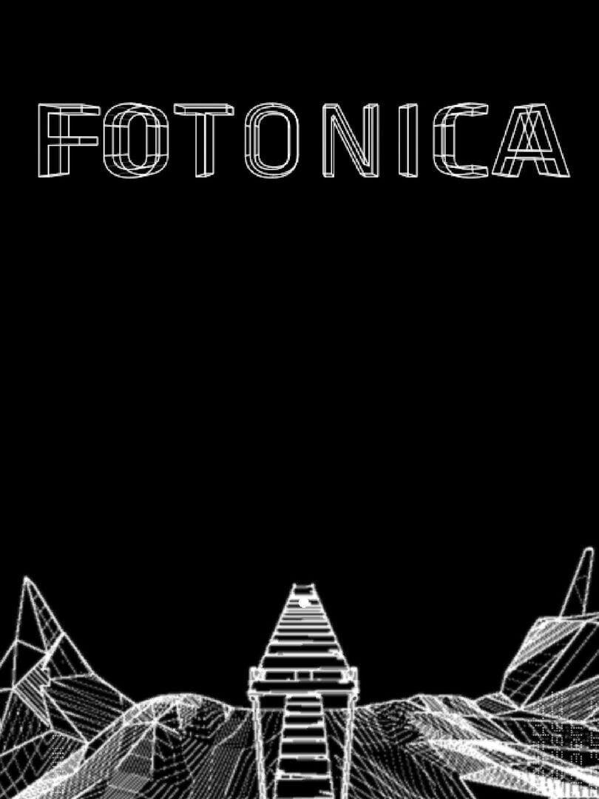

FOTONICA
FOTONICA
Details
|  | |
| Playtime | Not Played |
| Last Activity | Never |
| Added | 9/2/2024 19:36:05 |
| Modified | 9/2/2024 21:32:06 |
| Completion Status | Not Played |
| Library | Steam |
| Source | Steam |
| Platform | PC (Windows) |
| Release Date | 7/17/2011 |
| Community Score | 80 |
| Critic Score | |
| User Score | |
| Genre | Arcade Indie Platform |
| Developer | Santa Ragione |
| Publisher | Santa Ragione |
| Feature | Multiplayer Single Player |
| Links | Steam Official iPhone Wikipedia YouTube Android iPad Twitch |
| Tag | |
Description
Ever wondered what running at 140mph feels like? FOTONICA is a first-person game about the thrill of speed and traveling flawlessly through complex environments.
FOTONICA is simple, but is not easy: it follows a tradition of arcade games that are easy to pick up and almost impossible to master. A multi-layered level design across eight different tracks, together with a procedural endless mode make for a game that is incredibly deep. Think you can outrun your friends? Try the split-screen versus challenges.
The visuals are a treat for the nostalgic player but also for those hungry for new aesthetics. Every pixel is drawn to convey the maximum sense of speed, an exhilarating journey through light and void.
FOTONICA is simple, but is not easy: it follows a tradition of arcade games that are easy to pick up and almost impossible to master. A multi-layered level design across eight different tracks, together with a procedural endless mode make for a game that is incredibly deep. Think you can outrun your friends? Try the split-screen versus challenges.
The visuals are a treat for the nostalgic player but also for those hungry for new aesthetics. Every pixel is drawn to convey the maximum sense of speed, an exhilarating journey through light and void.
Key features
- 8 Levels to explore and master.
- Plus 3 different endless levels to compete for high-scores.
- Four-player split-screen local multiplayer mode!
- 20 Achievements to unlock plus game stats.
- Online rankings.
- Beautiful, smooth, and unique vector-style graphics.
- Electronic music by Michael Manning, Nicolò Sala, and legendary composer Baiyon.
- 4 Difficulty settings to let you play an even faster version of FOTONICA.